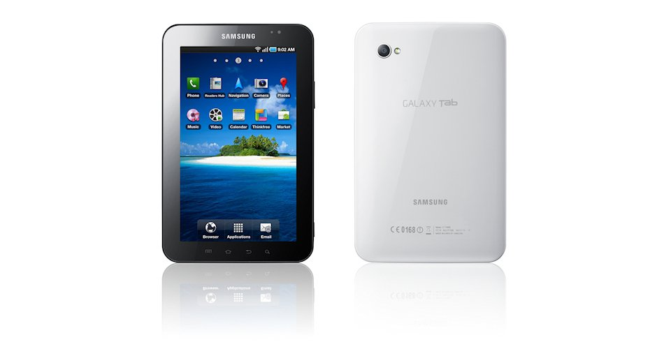
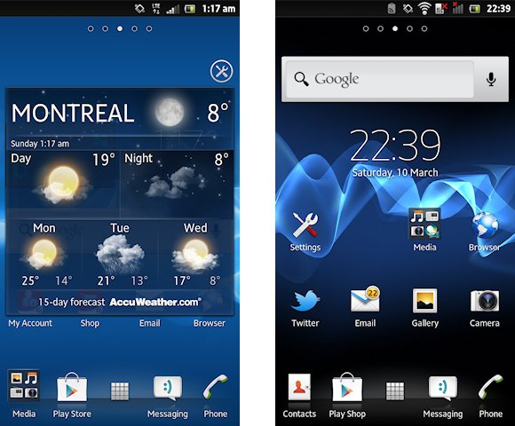
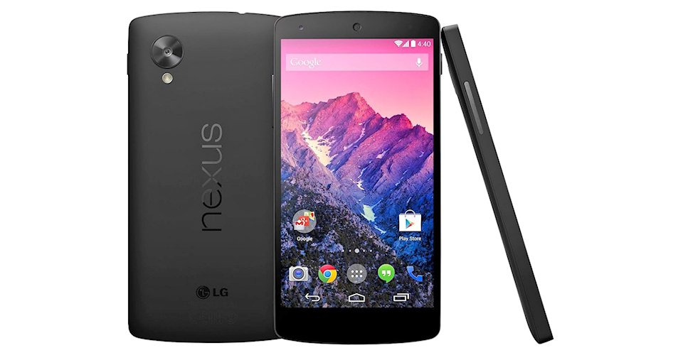

FRAGMENTACIÓN DE MERCADO Y VERSIONES

Aquí te presentamos la historia, versiones y aspectos importantes de Android: de Apple Pie 1.0 a Android 10.
2008
En agosto aparece el primer smartphone con sistema operativo Android, el HTC Dream, rebautizado como T-Mobile G1 en Estados Unidos, donde se puso en venta oficialmente el 22 de octubre. En 6 meses se vendieron un millón de unidades en Estados Unidos y 100.000 más en Gran Bretaña. Android entraba con fuerza en el mercado de los terminales inteligentes.
2009
Android 1.1 Banana Bread: Apenas 3 meses después del lanzamiento de Android 1.0 llegaba la primera actualización, Android 1.1 Banana Bread, concretamente en febrero. No añadía grandes novedades, pero sí corregía numerosos fallos y bugs detectados en la primera versión e introducía un concepto poco usado por los rivales que buscaba facilitar la vida al usuario: las actualizaciones automáticas, con las que resultaba muy simple mantener todo el software del terminal al día.
Android 1.5 Cupcake: En abril aparece la primera actualización de gran calado, Android 1.5 Cupcake, y con ella se inicia la golosa nomenclatura de Google para con su SO móvil. Se realizaron cambios casi imperceptibles sobre algunos elementos de la interfaz, pero las novedades más interesantes llegaron a nivel de usabilidad con nuevas características.
Además de añadir el teclado en pantalla y la grabación y reproducción de vídeos, Google abrió ambas funcionalidades a los desarrolladores, que fueron capaces de crear sus propias versiones tanto del teclado en pantalla como de la interfaz del reproductor de vídeo.
Android 1.6 Donut: Apareció en septiembre con algunas novedades adicionales. Toda la interfaz volvió a sufrir pequeños retoques visuales más algunos nuevos elementos, pero lo realmente atractivo estaba en el núcleo del SO
Android 2.0 Eclair: Apenas dos meses después, en noviembre, aparecía Android 2.0 Eclair, uno de los cambios más sustanciales sufridos por Android tanto a nivel de diseño como de arquitectura interna. Era una versión dirigida a dispositivos de mayor tamaño en un tiempo en el que los fabricantes empezaban a diversificar su oferta.
En octubre Motorola lanzaba Droid a través de la operadora Verizon, un smartphone con resolución 854x480 que pretendía competir contra el iPhone. La venta de 250.000 terminales sólo la primera semana en Estados Unidos supuso uno de los más grandes éxitos en la historia de la compañía.
2010
En mayo aparecería el HTC Wildfire HTC se había convertido en el principal aliado de Android, pero se atisbaba la llegada de un duro competidor en el campo de la fabricación de hardware: Samsung. Su Galaxy S logró vender más de 10 millones de copias y fue uno de los principales motivos, junto con la pujanza del hardware de HTC, para que Android sobre pase a iOS en cuota de mercado por primera vez.
Android 2.2 Froyo: El Nexus One fue precisamente el primer móvil que fue actualizado, lo que dejaba entrever cuál sería la política de Google desde aquel entonces.
Ese mismo año verían la luz las primeras tabletas equipadas con el sistema operativo móvil de Google, entre ellas la Samsung Galaxy Tab, de la cual han aparecido numerosas versiones posteriores. Pretendía ser la competencia directa del iPad.
Android 2.3 Gingerbread: Para finalizar el año, Google lanzó una nueva revisión del sistema operativo, con la idea continuar en la política de actualizaciones acompañadas por el lanzamiento de nuevos teléfonos, esta vez aliados con Samsung. Gingerbread se convertiría en la versión de Android más extendida durante los siguientes años.
Gingerbread llegó de la mano del Google Nexus S, un derivado de la exitosa línea de terminales Galaxy S de Samsung. Fue el primero en eliminar la bola de navegación hardware del teléfono, por lo que la interacción con el sistema operativo paso a ser totalmente táctil a través de la pantalla.
2011
Android 3.0 Honeycomb: Se trata de una actualización específica para tabletas, no compatible con teléfonos, que introducía las líneas maestras de la interfaz en el futuro. Las versiones 3.1 y 3.2 mantuvieron el mismo nombre y fueron básicamente un conjunto de correcciones.
Android 4.0 Ice Cream Sandwich: Fue uno de los cambios más importantes sufridos por Android en teléfonos, y es considerado como el momento en el que adquirió su mayoría de edad. Ese año superó la cuota de mercado de BlackBerry y se convirtió en el sistema operativo móvil más usado del mundo.
2012
Android 4.1 Jelly Bean: En el I/O de Google 2012 celebrado en julio aparece Android 4.1 Jelly Bean, un lanzamiento que reformula la estrategia de Android en tabletas añadiendo nuevas características. A primera vista los cambios no son palpables, pero los hubo e importantes. Destaca la desaparición del soporte para Flash Player.
2013
La división Android de Google cambia de dirección. Desde marzo es Sundar Pichai en sustitución de Andy Rubin quien asume el mando. El 24 de julio Google anunciaba Android 4.3, que mantenía el nombre de Jelly Bean pese a los rumores sobre Android 5. También pretende consolidar Android como un sistema operativo capaz de hacer correr juegos.
Android 4.4 KitKat: Hay muchas versiones y los fabricantes tienen dificultades para adaptar sus productos a los requisitos de las últimas entregas, por lo que muchos usuarios no se actualizan. Pese a los rumores y los vaivenes con el nombre (esta versión fue conocida como Key Lime Pie antes de que Google y Nestlé sellaran su particular acuerdo).
2014
Android 5.0 Lollipop: Android amplía sus horizontes se instala en todo tipo de dispositivos: Android TV, smartwatches, Android Auto y otros dispositivos para el entretenimiento como Nexus Player. Uno de sus rasgos más llamativos fue la inclusión Material Design, un nuevo lenguaje de diseño que unifica la experiencia de uso en cualquier tipo de dispositivo.

2015
No fue hasta marzo de 2015 que estuvo disponible la esperada actualización Android 5.1 Lollipop, con la que se mejoraba el rendimiento del procesador y se aumentaba la autonomía de la batería.

Android 6.0 Marshmallow: El lanzamiento de la versión 6.0 del sistema se estima para finales del segundo semestre del año, aunque los desarrolladores ya pueden descargar el SDK. La Developer Preview 3 dispone de un nuevo paquete de fondos de pantalla y una nueva animación de inicio.
2016
Android 7.0 Nougat: Como siempre viene con numerosas novedades y mejoras tanto en el apartado funcional como el estético.
2017
Android 8.0 Oreo: Una nueva muestra de la compañía americana con el mundo del dulce, esta vez adoptando el nombre de unas populares galletas. Tras un par de versiones para desarrolladores vio la luz definitivamente en agosto de 2017 para dispositivos Nexus y Pixel compatibles.
2018
Android 9 Pie: Tras varios meses con versiones previas con el nombre en clave de P, Google anunció finalmente en agosto del año 2018 la siguiente iteración de su sistema operativo móvil. Esta vez tan solo se eligió el nombre de un tipo de postre, una simplificación en sintonía con los cambios aparecidos enfocados a facilitar el manejo y el mayor aprendizaje del sistema de tus hábitos y costumbres mediante la inteligencia a artificial al tiempo que se busca un comportamiento menos invasivo y absorbente en sintonía con los hábitos de vida saludables.
2019
Como va siendo habitual, marzo volvió a ser el mes de los anuncios de Google respecto a su sistema operativo móvil con la presentación de Android Q.
Android 10: Google elimina las nomenclaturas relacionadas con postres y dulces para quedarse con la escueta y simple nueva denominación. Los primeros teléfonos en recibir la nueva versión serían los Google Pixel de la misma casa. Para el resto de terminales todo dependería de sus fabricantes.
En un principio, Android era eminentemente un sistema operativo pensado para usar con teclado, y gracias a un cursor poder navegar entre las aplicaciones. Desde su comienzo, Android ha sido altamente personalizable. Poco después, antes del lanzamiento del primer teléfono Android, esta filosofía cambió para convertirse en eminentemente táctil, y poder competir contra el iPhone.
Google lleva desde finales de 2010 informando de la distribución de versiones de Android para que los desarrolladores sepan sobre qué versiones del sistema operativo centran sus esfuerzos, y para que los usuarios vean cómo se va distribuyendo cada nueva actualización de Android.
Gráfico de uso de las distintas versiones de Android desde los años 2010 hasta 2018